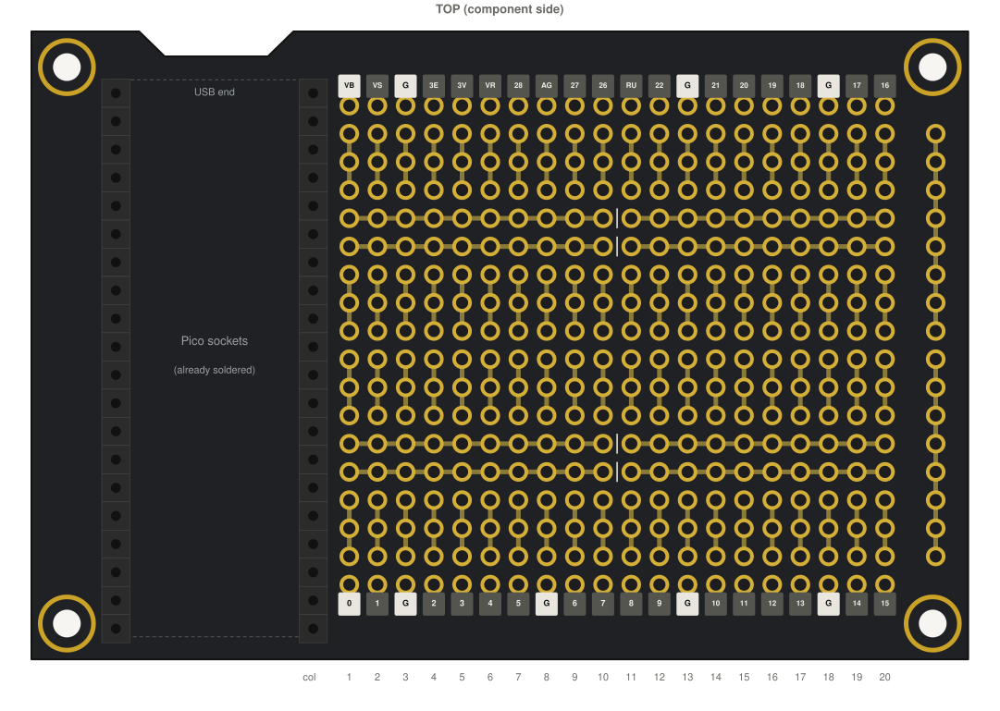
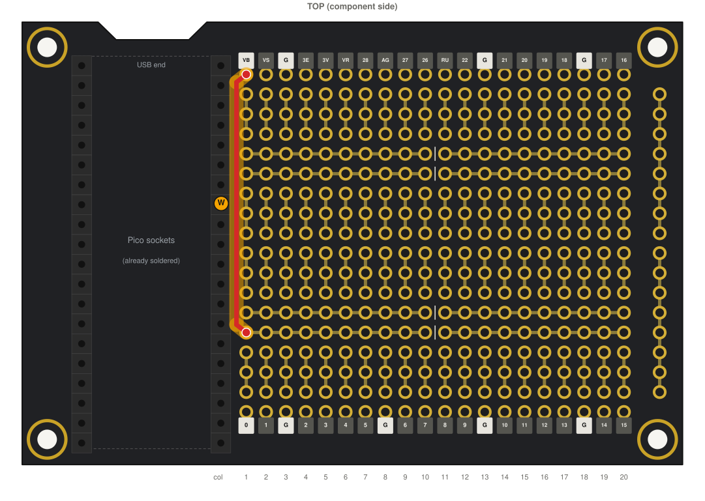
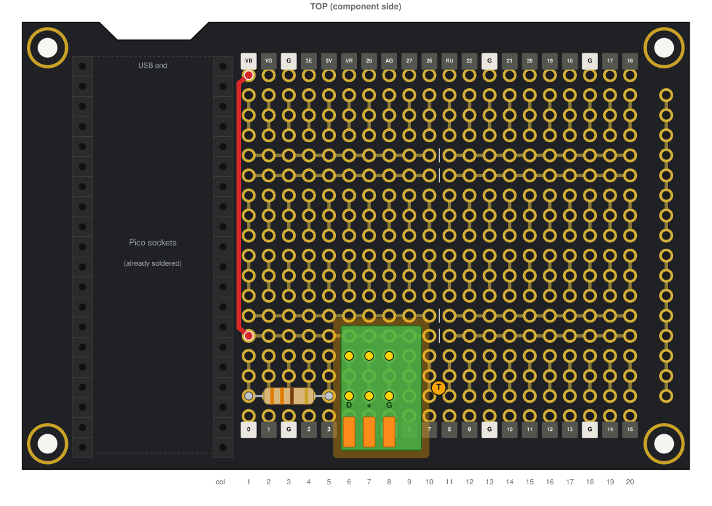
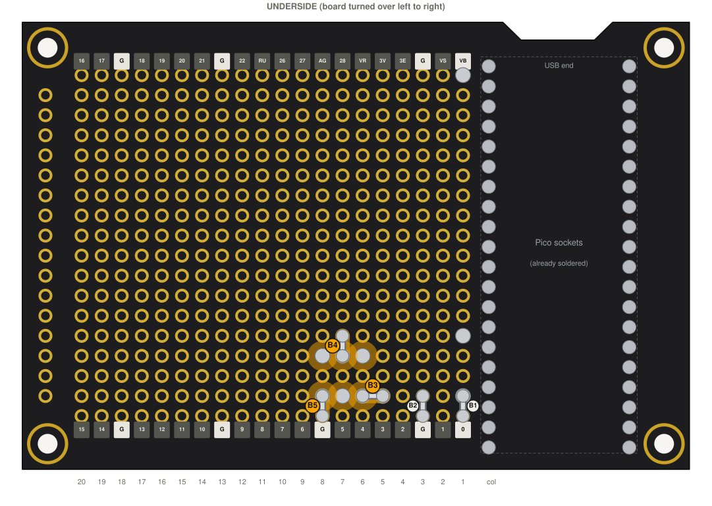
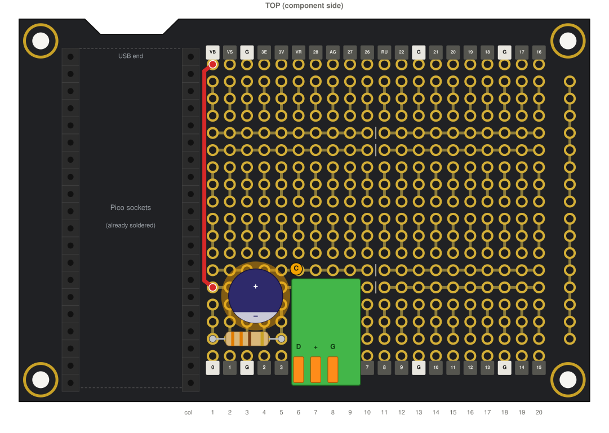
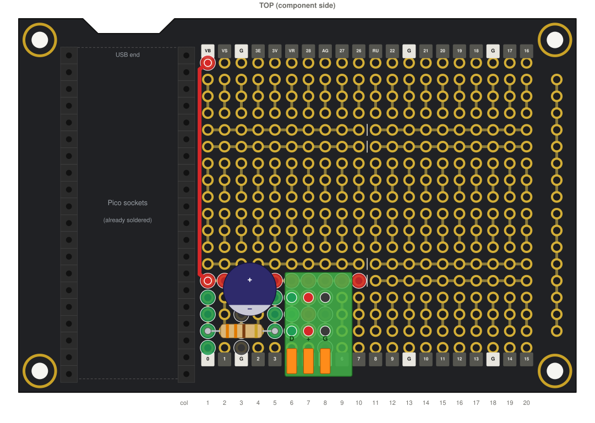
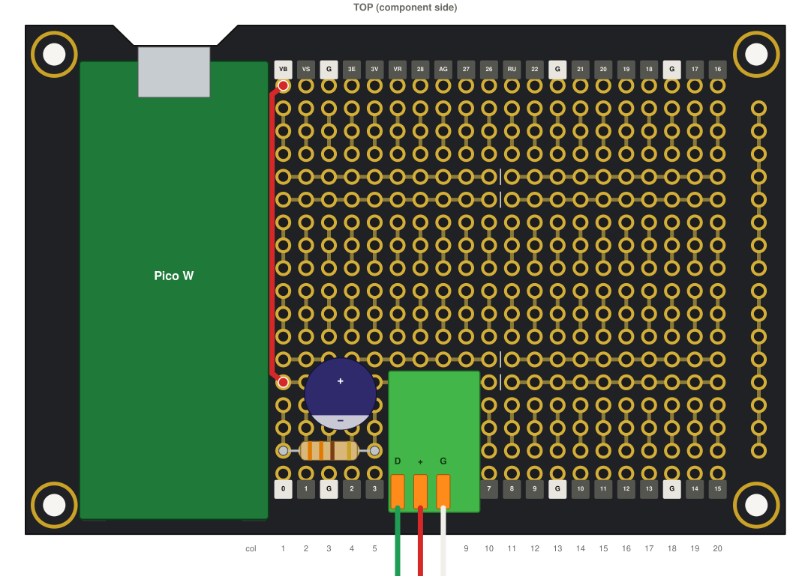

<title>Tree Lights Board Build</title>
<meta name="claude:viewport-fit-sides" content="cover">
<link rel="stylesheet" href="https://fonts.googleapis.com/css2?family=IBM+Plex+Mono:wght@400;500&family=IBM+Plex+Sans+Condensed:wght@600&family=IBM+Plex+Sans:wght@400;600&display=swap">
<style>
/* Layout: one reading column; each step is a heading, a full-width board image, then the actions. */
:root {
  --bg: #f5f3ee; --surface: #ffffff; --fg: #1d1f1c; --muted: #5d625a; --line: #dcd8cd;
  --accent: #a35f00; --accent-soft: #fbeccf; --code-bg: #ecebe4;
  --font-body: "IBM Plex Sans", system-ui, -apple-system, "Segoe UI", sans-serif;
  --font-head: "IBM Plex Sans Condensed", "IBM Plex Sans", system-ui, sans-serif;
  --font-mono: "IBM Plex Mono", ui-monospace, Menlo, monospace;
}
@media (prefers-color-scheme: dark) { :root:not([data-theme="light"]) {
  --bg: #141613; --surface: #1c1f1b; --fg: #ecebe5; --muted: #a4a99f; --line: #33372f;
  --accent: #f4a300; --accent-soft: #3a2c10; --code-bg: #262a24; color-scheme: dark } }
:root[data-theme="dark"] {
  --bg: #141613; --surface: #1c1f1b; --fg: #ecebe5; --muted: #a4a99f; --line: #33372f;
  --accent: #f4a300; --accent-soft: #3a2c10; --code-bg: #262a24; color-scheme: dark }
body { background: var(--bg); color: var(--fg); font: 16px/1.6 var(--font-body); }
main { max-width: 820px; margin: 0 auto; padding-block: 28px 64px;
  padding-left: max(16px, env(safe-area-inset-left, 0px)); padding-right: max(16px, env(safe-area-inset-right, 0px)); }
h1, h2 { font-family: var(--font-head); text-wrap: balance; line-height: 1.2; }
h1 { font-size: 2rem; font-weight: 600; margin: 0 0 12px; }
h2 { font-size: 1.4rem; font-weight: 600; margin: 44px 0 10px; padding-top: 14px; border-top: 1px solid var(--line); }
h2:first-of-type { border-top: 0; }
p, li { max-width: 68ch; }
ul, ol { padding-left: 1.4em; }
li + li { margin-top: 4px; }
li > ul { margin-top: 4px; }
strong { font-weight: 600; }
em { font-style: normal; text-decoration: underline; text-decoration-color: var(--accent); text-underline-offset: 3px; }
hr { border: 0; height: 0; margin: 8px 0; }
code { font-family: var(--font-mono); font-size: 0.9em; background: var(--code-bg); padding: 1px 5px; border-radius: 4px; }
figure { margin: 14px 0 16px; background: #0f100e; border-radius: 10px; padding: 6px; overflow-x: auto; }
figure img { display: block; width: 100%; min-width: 560px; height: auto; }
.step-tag { display: inline-block; font-family: var(--font-mono); font-size: 0.78rem; letter-spacing: 0.04em;
  color: var(--accent); background: var(--accent-soft); border-radius: 999px; padding: 2px 10px; margin-bottom: 6px; }
.callout { background: var(--accent-soft); border-radius: 8px; padding: 10px 14px; margin: 12px 0; }
.callout p { margin: 0; }
.table-wrap { overflow-x: auto; margin: 12px 0; }
table { border-collapse: collapse; width: 100%; min-width: 440px; background: var(--surface); }
th, td { text-align: left; padding: 8px 10px; border-bottom: 1px solid var(--line); vertical-align: top; }
th { font-weight: 600; font-size: 0.9rem; color: var(--muted); }
a { color: var(--accent); }
:focus-visible { outline: 2px solid var(--accent); outline-offset: 2px; }
</style>
<main>
<h1>Building the tree lights board</h1>
<p>These steps build the tree lights circuit on a <strong>ProtoMate for Pico</strong>, using the 3-way lever terminal that has <strong>six legs</strong> (two per contact). The terminal keeps all six legs. Every one of them goes into a strip, so none touch the Pico's edge pads.</p>
<p>Most images show the <strong>top</strong> of the board with the USB end at the top. The <strong>underside</strong> images show the board turned over left to right, so everything is mirrored, the same as when you look at your real board. Amber marks what's new in each step. The numbers under each image are column numbers.</p>
<h2>How to find your way around</h2>
<ul>
<li><strong>Columns.</strong> Column 1 is the one with <strong>VB</strong> above it and <strong>0</strong> below it. Count to the right from there (on the underside, count to the left).</li>
<li><strong>The bottom block.</strong> These are the three rows of holes just above the bottom edge pads (0, 1, G, 2…). In each column, those three holes are joined. Call them <strong>row 1</strong> (the top one, nearest the rails), <strong>row 2</strong> and <strong>row 3</strong> (nearest the edge pads).</li>
<li><strong>The 5V rail.</strong> This is the lower of the two long horizontal rows just above the bottom block, left half (columns 1 to 10). This build uses it for 5V. The rail above it isn't used.</li>
<li><strong>Edge pads.</strong> Each pad along the top and bottom edges is one of the Pico's pins (0 is GP0, G is ground, VB is VBUS, the 5V from USB). They connect to nothing else unless you link them.</li>
<li><strong>Links (B1 to B5).</strong> These are short bare wires on the underside, each joining two pads that sit next to each other. They don't go into holes. Each one lies flat on the board and is soldered onto the outside of the joints at each end (see "Making a link" below). Use the legs you trim off the resistor.</li>
</ul>
<h2>Making a link</h2>
<p>Most links join onto a pad that already has a soldered leg in it, so there's no room in the hole for anything else. You don't need any. A link lies flat on the board and is soldered onto the outside of the joint:</p>
<ol>
<li><strong>Shape it.</strong> Cut a piece of trimmed resistor leg about 5 mm long, enough to reach from the middle of one pad to the middle of the next. Bend the ends down slightly if it helps it sit flat.</li>
<li><strong>Tin it.</strong> Melt a little solder onto the wire.</li>
<li><strong>Join the first end.</strong> Hold the wire against the side of the first joint with tweezers. Touch the iron to the joint until its solder melts and the wire sinks into it. Take the iron away and keep the wire still for a couple of seconds.</li>
<li><strong>Join the other end.</strong> Do the same at the second pad. If that pad's hole is empty, solder the wire to the pad's copper ring, or poke the end into the hole first if that's easier.</li>
<li><strong>Check.</strong> Each end should be a smooth, shiny joint that has flowed onto the pad. Tug the wire gently with tweezers: it shouldn't move. It also mustn't touch any other pad.</li>
</ol>
<p>On this board, neighbouring pads are close enough (2.54 mm apart) that a large blob of solder can bridge them. That works in a pinch, but it's easy to bridge a third pad by accident, and a blob can crack. A piece of wire is more reliable.</p>
<h2>What you need</h2>
<ul>
<li>3-way lever terminal (the six-legged one)</li>
<li>330 Ω resistor (orange, orange, brown)</li>
<li>1000 µF capacitor, 6.3 V or more. Upright, it can be up to <strong>14 mm</strong> tall. If yours is taller, lay it on its side in step 6.</li>
<li>About 60 mm of thin insulated solid-core wire, for the VB wire</li>
<li>Masking tape, to hold parts flat while you solder</li>
</ul>
<h2>Why this order</h2>
<ul>
<li><strong>Lowest parts first.</strong> The wire and resistor go in before the terminal and capacitor. Then the board lies flat while you solder, and nothing gets in the way of your iron.</li>
<li><strong>Nothing goes under the terminal on the top.</strong> The terminal covers the holes it sits on, plus the 5V rail holes just above it. So everything on the top goes beside the terminal, not under it. All the terminal's connections are underside links, made after the terminal is soldered, because they join onto its legs.</li>
<li><strong>The links next to the edge pads come early (step 3).</strong> They're easier to reach before the terminal and capacitor are on.</li>
<li><strong>The Pico goes in last,</strong> after the checks. If anything is shorted, the Pico isn't there to be damaged.</li>
</ul>
<hr />
<h2 id="step-0"><span class="step-tag">STEP 0</span><br>Starting point</h2>
<figure></figure>
<p>The Pico's sockets are soldered on. Nothing else is fitted yet. If the terminal is still on the board from before, desolder it first.</p>
<h2 id="step-1"><span class="step-tag">STEP 1</span><br>VB wire (W)</h2>
<figure></figure>
<p>This takes the 5V from the Pico's USB socket (the <strong>VB</strong> pad) to the 5V rail.</p>
<ol>
<li>Cut about 60 mm of insulated wire and strip 3 mm from each end.</li>
<li>Push one end into the <strong>VB</strong> pad: top edge, column 1.</li>
<li>Run the wire down the left edge of the prototyping area, between the Pico sockets and column 1.</li>
<li>Push the other end into the <strong>5V rail, column 1</strong>.</li>
<li>Bend both ends over on the underside so the wire stays put. You'll solder it in step 3.</li>
</ol>
<h2 id="step-2"><span class="step-tag">STEP 2</span><br>Resistor (R)</h2>
<figure></figure>
<ol>
<li>Bend the resistor's legs so they're 4 holes apart (10 mm).</li>
<li>Fit it flat in <strong>row 3 of the bottom block</strong>, from <strong>column 1 to column 5</strong>.</li>
<li>Bend the legs out on the underside. <strong>Don't trim the column 1 leg yet</strong>: it makes link B1 in the next step.</li>
</ol>
<h2 id="step-3"><span class="step-tag">STEP 3</span><br>Underside: solder, then links B1 and B2</h2>
<figure></figure>
<p>Turn the board over. Column 1 is now on the <strong>right</strong>, next to the Pico sockets.</p>
<ol>
<li>Solder both ends of the VB wire and both resistor legs.</li>
<li><strong>B1 (data from the Pico):</strong> bend the resistor's column 1 leg flat, down onto the <strong>0</strong> pad just below it, and solder it there. Trim off the rest of the leg and <strong>keep the piece</strong>.</li>
<li><strong>Leave the column 5 leg long.</strong> Bend it flat against the board, pointing towards column 6. It becomes link B3 in step 5.</li>
<li><strong>B2 (ground for the capacitor):</strong> make a link from the piece you kept: from the <strong>G</strong> pad below column 3 up to the column 3, row 3 pad. Both of those holes are empty, so you can solder to the pads or poke the ends in. B2 has nothing to do with the resistor. It brings ground to column 3, ready for the capacitor\'s − leg in step 6. The resistor\'s body passes over column 3 on the top, but its legs are only in columns 1 and 5, so the two never touch.</li>
</ol>
<div class="callout"><p><strong>Check:</strong> the <strong>0</strong> pad beeps to the resistor's column 1 leg, and the <strong>G</strong> pad beeps to column 3, row 1.</p></div>
<h2 id="step-4"><span class="step-tag">STEP 4</span><br>Terminal (T)</h2>
<figure></figure>
<ol>
<li>Put the terminal in <strong>columns 6, 7 and 8</strong>:</li>
<li>back legs in <strong>row 1</strong> of the bottom block</li>
<li>front legs in <strong>row 3</strong></li>
<li>wire openings (orange levers) facing the <strong>bottom edge</strong></li>
<li>Make sure it sits flat and square, then hold it down with tape.</li>
</ol>
<p>Its body hangs over to the right and back, covering the holes it sits on, part of column 9, and the 5V rail just behind it. That's expected. Nothing on the top needs those holes.</p>
<p>Viewed from the front, the contacts are <strong>D (data) · + (5V) · G (ground)</strong>, left to right.</p>
<h2 id="step-5"><span class="step-tag">STEP 5</span><br>Underside: terminal legs, then links B3, B4 and B5</h2>
<figure></figure>
<ol>
<li>Solder <strong>one front leg</strong> first, then check the terminal is still flat. If it isn't, reheat that joint and press the terminal down.</li>
<li>Solder the other five legs.</li>
<li>Now make the three links. Each one lies flat and is soldered onto the outside of the joints, as in "Making a link". Leave the terminal's leg ends as they are: the bit sticking out gives the link wire something to sit against.</li>
<li><strong>B3 (data to the terminal):</strong> take the resistor's column 5 leg, which you left long, and lay it across to the terminal's <strong>column 6, row 3</strong> joint next to it. Melt that joint so the leg sinks into it, then trim off the spare.</li>
<li><strong>B4 (5V to the terminal):</strong> a short piece of wire from the terminal's <strong>column 7, row 1</strong> joint to the <strong>5V rail</strong> pad just above it. The rail's hole is empty, so you can poke that end in.</li>
<li><strong>B5 (ground to the terminal):</strong> a short piece of wire from the terminal's <strong>column 8, row 3</strong> joint to the <strong>G</strong> pad just below it. That hole is empty too.</li>
</ol>
<div class="callout"><p><strong>Watch for solder bridges:</strong>
- The back legs in columns 6 and 8 sit right next to 5V rail pads. A bridge there would short data or ground to 5V.
- The front legs in columns 6 and 7 sit next to the <strong>4</strong> and <strong>5</strong> edge pads, which are Pico pins.</p></div>
<h2 id="step-6"><span class="step-tag">STEP 6</span><br>Capacitor (C)</h2>
<figure></figure>
<p>This smooths the lights' 5V supply.</p>
<ol>
<li>The capacitor sits diagonally:</li>
<li><strong>+ leg</strong> (the longer one, no stripe) in the <strong>5V rail, column 4</strong></li>
<li><strong>− leg</strong> (the stripe side) in <strong>column 3, row 1</strong></li>
</ol>
<p>The holes are about 3.6 mm apart, which suits most 8 mm capacitors. Bend the legs slightly if yours are 2.5 or 5 mm apart.
2. If it's taller than 14 mm, lay it on its side, pointing towards the USB end, before you solder. The case lid is 16 mm above the board.
3. Solder it from the underside and trim the legs.</p>
<div class="callout"><p><strong>Get the polarity right:</strong> an electrolytic capacitor fitted backwards can fail with a pop.</p></div>
<h2 id="step-7"><span class="step-tag">STEP 7</span><br>Check it before the Pico goes in</h2>
<figure></figure>
<p>Red is 5V, grey is ground, and green is data. Set your multimeter to beep (continuity):</p>
<div class="table-wrap"><table>
<thead>
<tr>
<th>Probe between</th>
<th>Expect</th>
</tr>
</thead>
<tbody>
<tr>
<td>Terminal <strong>+</strong> and the <strong>VB</strong> pad</td>
<td>beep</td>
</tr>
<tr>
<td>Terminal <strong>G</strong> and any <strong>G</strong> pad</td>
<td>beep</td>
</tr>
<tr>
<td>Terminal <strong>D</strong> and the resistor's column 5 end</td>
<td>beep</td>
</tr>
<tr>
<td><strong>0</strong> pad and terminal <strong>D</strong></td>
<td>about 330 Ω on the resistance setting (no beep)</td>
</tr>
<tr>
<td>Terminal <strong>+</strong> and terminal <strong>G</strong></td>
<td><strong>no beep</strong>. A beep means 5V is shorted to ground: find it before going on.</td>
</tr>
<tr>
<td>Terminal <strong>D</strong> and terminal <strong>+</strong> or <strong>G</strong></td>
<td>no beep</td>
</tr>
<tr>
<td>Edge pads <strong>4</strong>, <strong>5</strong> and <strong>6</strong> and any terminal contact</td>
<td>no beep</td>
</tr>
</tbody>
</table></div>
<p>The capacitor may beep briefly between + and G while it charges from the meter. A beep that stops after a moment is fine; one that keeps going is a short.</p>
<h2 id="step-8"><span class="step-tag">STEP 8</span><br>Finish</h2>
<figure></figure>
<ol>
<li>Plug the Pico in, with its USB end at the top.</li>
<li>Strip about 6 mm from each of the lights' three wires.</li>
<li>Hold each lever down, push a wire in, then let go. From the front, left to right: <strong>data</strong>, <strong>+5V</strong>, <strong>ground</strong>.</li>
<li>Plug in USB power. The software already uses GP0, so nothing needs changing.</li>
</ol>
<p>The case's cable slot is centred on the middle contact (column 7) and is 10 mm wide, so it lines up with all three wire openings.</p>
<hr />
<h2>Other places this terminal fits</h2>
<p>It fits wherever both rows of legs land in the <strong>same 3-hole strips</strong>: the top and bottom holes (rows 1 and 3) of any block, across three neighbouring columns. It doesn't work anywhere one row of legs would go into the edge pads, a rail, or the long strips down the right-hand side, because those would join contacts together or connect them to Pico pins.</p>
<ul>
<li><strong>Bottom block, columns 6 to 8 (used here).</strong> It's right next to the case's cable slot. The <strong>G</strong> pad below column 8 gives ground with one short link. The resistor and capacitor fit beside it.</li>
<li><strong>Top block, columns 1 to 3, openings facing the USB end.</strong> The front legs would sit right next to the <strong>VB</strong> pad (column 1) and a <strong>G</strong> pad (column 3). Power and ground would each be one tiny link, with no VB wire. The middle contact, column 2, would be data, and it must <em>not</em> be linked to the <strong>VS</strong> pad beside it. The lights cable would leave next to the USB cable. The case would need its slot moved to the USB end and the keyholes turned round. It's a neat option if you'd like both cables on one side.</li>
<li><strong>The two middle blocks.</strong> It fits, but the wires would have to cross the board to reach a wall. Not worth it.</li>
</ul>
</main>
